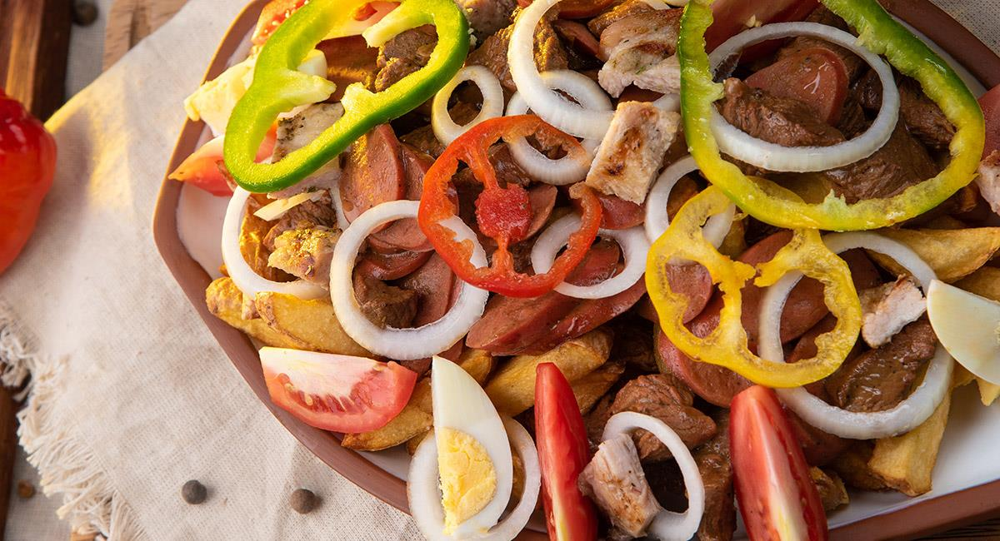

Home
Pique Macho
Difficultad: Media

El pique macho (o pique a lo macho) es un plato insignia de la gastronomía boliviana. Consiste en una deliciosa y contundente mezcla de carne de res, chorizo o salchicha, papas fritas, cebolla, tomate, huevo duro y el característico locoto picante.
Ingredientes
- ½ kilo de carne blanda de res
- 6 chorizos
- 6 huevos
- 14 papas
- 3 tomates medianos
- ¼ de cebolla
Preparación
- Pela y lava las papas. Después córtalas en bastones, como para papas fritas. Sécalas bien antes de freírlas para evitar que el aceite salpique.
- Calienta suficiente aceite y fríe las papas hasta que estén doradas y crujientes. Retíralas y déjalas escurrir.
- Pon los huevos a cocer hasta que estén duros. Una vez listos, pélalos y córtalos en mitades o cuartos para utilizarlos al momento de montar el plato.
- Corta la carne de res en trozos medianos. Agrega sal al gusto y fríela en una sartén con un poco de aceite hasta que esté bien cocida y dorada.
- Corta los chorizos en trozos o rodajas y cocínalos en la sartén. Cuando estén dorados, mézclalos con la carne.
- Corta los tomates en rodajas o gajos y corta la cebolla en tiras finas. Estas verduras se colocan sobre el pique al final.
- En una fuente grande coloca primero una buena cantidad de papas fritas. Encima agrega la carne y los chorizos.
- Distribuye los tomates, la cebolla y los huevos cocidos sobre la carne y las papas.
- Sirve el pique macho inmediatamente, cuando las papas todavía estén calientes y crujientes.